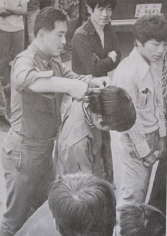
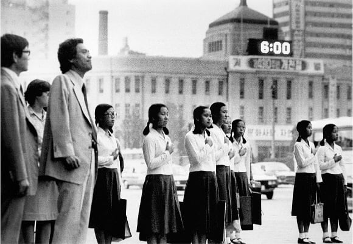
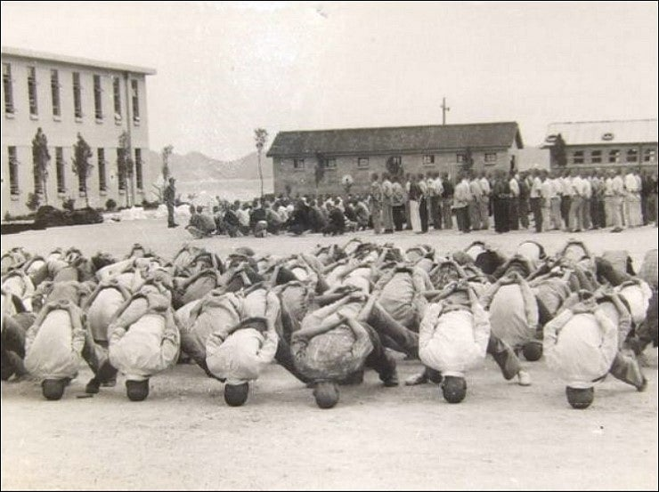

자정부터 4시까지 통금
경찰도 아니고 무려 헌병이 통제

민간인 두발단속
깝치면 바로 머리에 고속도로 생김
여자들은 치마길이도 단속당함

민간인도 해당되는 6시 락다운
당시엔 얼음땡이라고 불렸다고

군대 입소 직후
원래는 치약뚜껑에 박게 한다는데
아직 아쎄이들이라 바닐라로 배려해준 모습이다
근데도 장기 복무 지원자가 넘쳐났던 시절
70년대... 그곳은 어떤 곳일까?
자정부터 4시까지 통금
경찰도 아니고 무려 헌병이 통제

민간인 두발단속
깝치면 바로 머리에 고속도로 생김
여자들은 치마길이도 단속당함

민간인도 해당되는 6시 락다운
당시엔 얼음땡이라고 불렸다고

군대 입소 직후
원래는 치약뚜껑에 박게 한다는데
아직 아쎄이들이라 바닐라로 배려해준 모습이다
근데도 장기 복무 지원자가 넘쳐났던 시절
70년대... 그곳은 어떤 곳일까?
옹호 할 생각은 없지만
안저랬으면 지금도 동남아꼴 났을듯
저때는 경제적으로는 무려 찐북괴랑 비비고
정치사회적으로는 빨갱이 대장인 소련보다도 폐쇄적이던 시절이라...
그래도 저때 열심히 사셨던 우리 윗세대 분들 덕분에 (물론 부작용도 있긴 하지만) 지금 우리가 이정도 사는거지
통금 시간 어겼다고 들어간 경찰서 유치장에서 어렸을때 헤어진 자매? 가족과 재회한 사연이 방송을 나온 적 있음
저게 그나마 사람사는 나라꼴 된 거임
진짜 70~80년대가 야생의시대임 중국애들 막 시발 줄안서고 지랄엠병싸고 담배어디서든피고 저당시임 우리나라도 소매치기 인신매매걱정하고 아동유괴 이러뉴스도 수시로나오던시대임
긁힌 늙크크들 튀어나오네
저때 빨갱이새끼들 다 죽였어야했는데
거지나라가 뭐라도 해볼려면 결국 제왕적인 절대권력이 답이긴한듯 ㅋㅋㅋ
그거 아니면 제국주의처럼 식민지 부려야 가능할까말까함